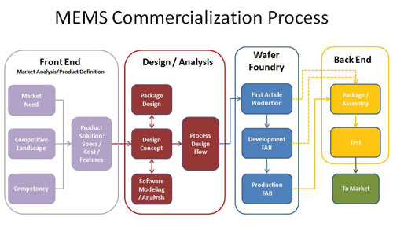
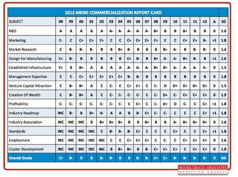

Technical Briefings
Barriers to the successful commercialization of MEMS
by Roger H. Grace [Roger Grace Associates]
This article provides the results of the recently completed 2013 MEMS Industry Commercialization Report Card Study (Report Card) [1]. The Report Card has been published annually beginning in 1998. For the establishment of the specific topics of the Report Card, market research was conducted on the general topic of technology commercialization and resulted in the selection of a number of critical success factors (aka, topics) that were considered necessary for successful commercialization specific to MEMS and to the MEMS industryThe purpose of the Report Card is to provide MEMS industry participants with an objective assessment of these critical success factors over time and to act as a tool to help them better understand, respond to and exploit the ever changing dynamics of the MEMS industry. The MEMS Industry Commercialization Report Card has been developed not only to help assess the progress of the commercialization of this technology, but more importantly to serve as a vehicle to help guide industry participants overcome the barriers to the successful commercialization of MEMS.
 The Report Card addresses many of the critical components of the MEMS commercialization process model (Figure 1) that I created based on extensive research and includes design for manufacturing and test (DfM), infrastructure, marketing and market research.
The problem
The commercialization process has been researched and tracked for several MEMS products, e.g., pressure sensors, accelerometers, and shows that it takes, on average, approximately 30 years for these products to become totally commercialized [2].
More importantly however, the total sales of MEMS as reported by numerous groups in 1998 was approximately 1/25th. of the sales of ICs at the time of the publishing of the first Report Card. The MEMS market for 2013 has been reported by several organizations to be approximately $10-$12 Billion (US), whereas Gartner Research has reported that the total IC market for 2013 was $315.0 Billion (US)—approximately a 30:1 ratio. The positive news here is that the MEMS market has been reported to be growing over the past several years at a compound annual growth rate (CAGR) in the 10-12% range (primarily fueled by mobile phones/tablets and consumer products). The IC market, however, has recently fluctuated: $299.9B (US) in 2012 and $307.8B (US) in 2011 (per Gartner Research; [3]. The question still remains, however, why is there still such a significant disparity in the market sizes? The Report Card's raison d'être is to help address this seeming paradox.
Research methodology
Figure 2 provides the letter grade results of the 2013 MEMS Commercialization Report Card on a yearly basis from 1998 to 2013. It also provides the change in grade from 2013 to 2013, as well as the standard deviation of the responses for each of the 14 topic grades in 2013.
 The Report Card addresses many of the critical components of the MEMS commercialization process model (Figure 1) that I created based on extensive research and includes design for manufacturing and test (DfM), infrastructure, marketing and market research.
Results
Of the approximately 1200 comments that were submitted, I have reviewed all of these and have attempted to summarize responses that reflect the consensus. (Details are available in ref. #1.] Change from the 2012 to 2013 grades are provided, as well as the standard deviations (SD) of the grades for each of the subjects from 1998 to 2013. The following provides a summary of the results of each of the 14 topics including my interpretations of the consensus overviews of the "verbatims."
R&D: 2013 Grade=B, 2012 Grade=B, Change=0, SD=1.6. R&D has typically received uniformly high grades since the inception of the Report Card in 1998—never falling below a grade of B. The focus of R&D activity appears to be on "small R" and "large D." There has been a decline in US Federal support but there is widespread new hope on the expected financial support of the "new players," e.g., Google, Apple.
Marketing: 2013 Grade=B-, 2012 Grade=C+, Change=+1, SD=1.8. The marketing efforts by organizations to support the sales of MEMS devices and services has been hampered by a technology push versus that of an applications/market pull strategy. MEMS marketing has typically received mediocre grades with the lowest being C- and hovering in the C level. I believe that "MEMS marketing" is considered to be an oxymoron [4] primarily influenced by the lack of knowledge and familiarity of basic marketing principles by MEMS industry participants, lack of adequate market research on unfulfilled customer needs, limited budget allocations and "we have a better mousetrap" mentality of MEMS industry management. MEMS marketing plays a vital role in the commercialization process as noted in Figure 1.
Market research: 2013 Grade B-, 2012 Grade B-, Change=0, SD=1.4. While there are several organizations specializing in providing market research vis-à-vis published reports and custom market studies, there appears to be a consensus that existing market research results significantly falls short of client expectations. Current market research is too focused on the mobile market. For example, there is not enough consideration provided on other markets including industrial and military. Furthermore, the market research tends to address the values of the markets based on extrapolation of existing numbers and not on values representative of emerging technologies and/or applications (i.e., shortsighted).